20/42
Weeks TEP
2
Companies
Hi there! I'm Clarisse
Currently, I am in my Final Year, taking my full-time diploma in Food & Beverage Business. This year, we are diving head first into real-life experience via internship.
In this first of two semesters, I have moved from full classroom-based learning to gain hands-on experience in cafe operations both front and back of house, while serving as a capable waitress at my internship outlet.
I hope to make my way into the HR side of F&B, and one day, start a home-based cafe.
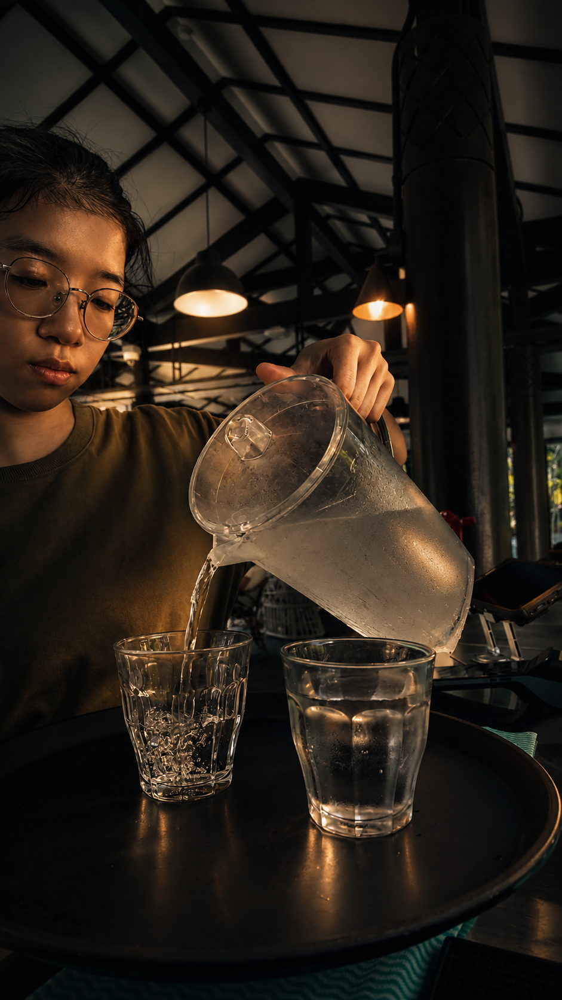
About Me
Hi! My name is Clarisse and I'm in my Third Year of F&B Business in the School of Business Management at Nanyang Polytechnic. Currently, I am on this wonderful internship journey under PS.Cafe learning how great hospitality is built through observation, practice, and discipline, and I'd love for you to join me.
I believe the best learning often comes from watching my colleagues in service, observing how they handle their service flow, then adapting and applying improvements daily. I have since gained hands-on exposure to service operations, teamwork, reflective learning, and how communication impacts smooth service flow. On other days, I'm learning to become a better bartender and barista through practice and online guides, honing skills with my professional coffee machine setup and matcha setup at home.
My goal is to use my passion for F&B to inspire others to pursue careers in this field. I hope to step further into this industry and one day set up a home cafe with my mother after she retires. I'm confident I can take on any challenge as I love participating in hands-on projects!
Brand Pillars
Hospitality & Guest Experience
Hospitality begins with awareness. It is found in the way a guest is welcomed, how their needs are understood, and how each interaction contributes to the overall dining experience.
Through my TEP journey, I have learnt to approach service with attentiveness and empathy. From active listening to clear guest communication, I aim to create an environment where guests feel comfortable, respected, and well cared for.
This pillar reflects my commitment to:- Communicating clearly with guests
- Listening actively to prevent mistakes and misunderstandings
- Making thoughtful recommendations based on guest needs
- Being mindful of dietary requirements and allergens
- Practising inclusivity in service
- Responding calmly and responsibly during service recovery
Reflective Growth
Growth is built through observation, reflection, and action. During my TEP journey, I have learnt that improvement comes from being open to feedback, asking the right questions, and applying what I learn in real service situations.
My learning approach is guided by:
I observe how tasks are carried out, adapt to different service situations, and apply feedback to improve my confidence and performance over time.
This pillar reflects my commitment to:- Seeking feedback and applying it
- Asking questions when I am unsure
- Setting small weekly goals to improve
- Building confidence through consistent practice
- Learning from mistakes instead of avoiding them
- Strengthening my professional language and service awareness
Growth Areas: Tray balancing, guest communication, service confidence, and interacting with diverse customer profiles (tourists & international guests).
Collaborative Service
Behind every smooth guest experience is a team that communicates, supports, and adapts together. In F&B, teamwork is not only about helping when asked — it is about staying aware of what the team needs and stepping in where possible.
Through my TEP journey, I have learnt the importance of being reliable, proactive, and calm during service. Whether updating product availability, assisting during rushes, or helping with opening/closing, I aim to contribute to an organized service flow.
This pillar reflects my commitment to:- Communicating updates clearly during service
- Supporting teammates during busy periods
- Helping with handovers, confirmations, and product availability updates
- Taking initiative when I am free
- Maintaining a calm and positive attitude
- Assisting with opening and closing duties
- Contributing to consistent service standards
Internship Journey
My Teaching Enterprise Project (TEP) journey has been a meaningful opportunity to experience the pace, standards. and the amount of teamwork required in the F&B industry. I used to regard waiters and waitresses as having an easy life, quite the contrary. Through service operations, guest interactions, and daily responsibilities, I have developed a deeper understanding and respect to these individuals and this environment.
At the start, instead of rushing to be the very best, I focused on observing how my team worked. Where they stood in the restaurant to have a hawk's eye view of the floor, how they handled guests, how they held trays while balancing heavy dishes and breakable bottles, and how service operations was carried out. This helped me understand that being observant was my first step into this industry to become more confident and capable.
This journey has allowed me to strengthen my 3 key areas. In hospitality, reflective growth and collaborative learning, and shaped the kind of FhB professional I aspire to be. Someone who is attentive, adaptavle, and willing to keep learning.
Learning The Ropes
For my first 3 weeks, I was kept as the food runner/float. As my outlet had a lack of staffs, I had to learn the ropes quickly. I gained hands-on experience in front-of-house operations and Learned what it takes to deliver smooth, consistent service. Unlike at my previous F&B endeavours, my key responsibilities here included seating guests accurately by table number, guiding walk-ins through the dining flow, and maintaining service standards from start to finish. Beyond service, I learned the full order-to-payment workflow, assisted with food running, and handled mise en place/stocking (including FIFO practices).
Finding my Rhythm
Over time, I began to understand that being a food runner was not just about carrying food from the kitchen to the table. It required awareness, speed, accuracy, and communication. I had to ensure that dishes were sent to the correct tables, that guests received their orders promptly, and that any special requests or changes were communicated clearly to the service team. Even small mistakes, such as going to the wrong table or forgetting to check the order details, could affect the guest experience. This taught me the importance of being alert and taking responsibility for every task given to me.
Adapting Under Pressure
During peak hours, I experienced how intense restaurant service could become. Orders came in continuously, guests were waiting to be seated, food had to be served quickly, and tables needed to be cleared and reset for the next group. At first, I struggled to know what to prioritise because everything felt urgent at the same time. However, I slowly learned to stay calm, listen carefully to instructions, and focus on one task at a time. I also learned to check table numbers properly before serving food, communicate with others when I needed help, and move with urgency without panicking. This helped me become more confident in handling busy service periods and taught me the importance of staying composed in a fast-paced F&B environment.
Becoming More Attentive
Overtime, I became more comfortable with the restaurant layout, table numbers, menu items, and service procedures. I also became more aware of guest needs, such as noticing when they required assistance, when water needed to be topped up, or signs of guests about to depart and where tables had to be reset quickly for the next guests. These small details helped me understand what it means to be attentive in hospitality. It is not only about completing assigned duties, but also about anticipating needs before being asked.
Projects
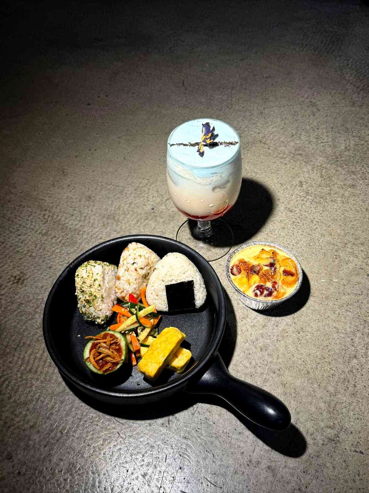
Term 1: Premium Bento Box Set & Crafted Beverage
R&D and crafting process for a premium bento box featuring 3 Onigiri flavors, Tamagoyaki, Homemade Sambal, and an artisan layered beverage.
View Full Project Details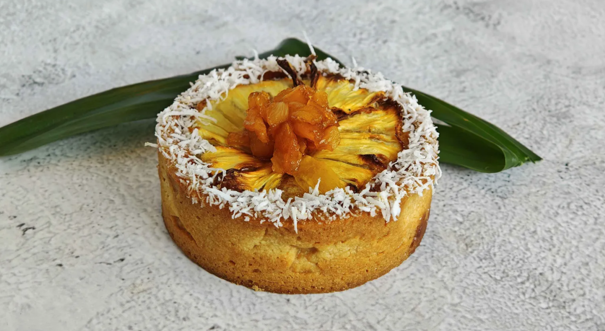
Term 2: Conceptualise A Limited-Time Offering Tart for our School's Library Café
Introducing Kaya Soleil. A nostalgic twist of our traditional kaya toast set, its name 'Soleil' was derived from the French word for 'Sun'.
View Full Project Details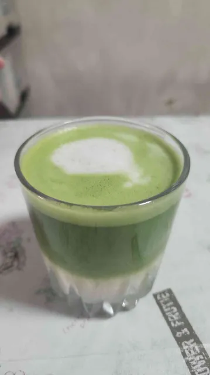
Exploring Café Craft: Coffee & Matcha
A personal project documenting my exploration of coffee and matcha drinks through flavour balance, technique, and visual presentation.
View Full Project DetailsTerm 1: Premium Bento Box Set + Crafted Beverage
Detailed breakdown of product R&D, recipe formulations, and visual development.
Concept Overview: A curated bento box set featuring 3 flavors of Onigiri, Tamagoyaki, Ikan Bilis, Homemade Sambal, Achar, Bread Pudding, accompanied by our signature "Alohaaa" crafted beverage.
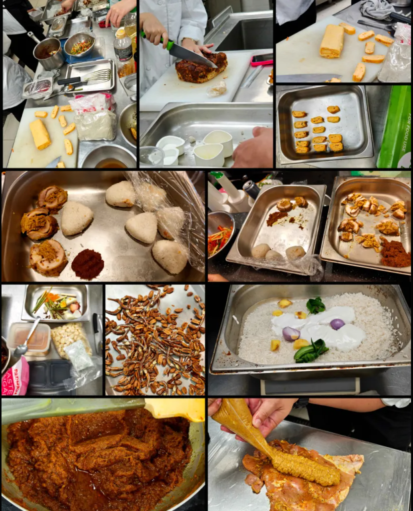
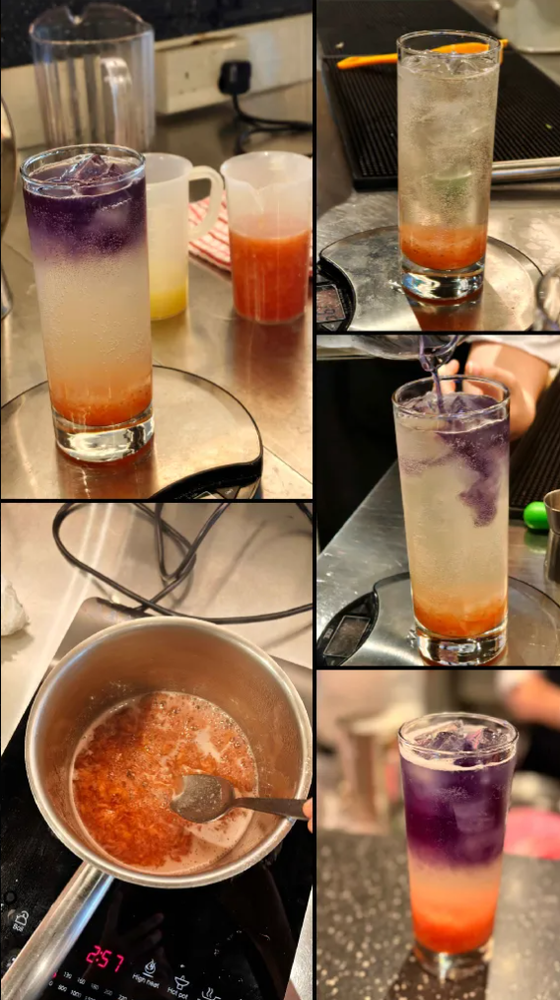
R&D Phase: For R&D Day, I was part of the team doing the crafted beverage prep. We had 3 weeks to test out the beverage ideas we had. Starting with our first draft. We attempted to make the strawberry puree from scratch. Starting with fresh strawberries being boiled into puree, sparkling water/sprite, and blue pea flower water. The idea was aesthetically pleasing and functioned similar to having a how a dessert Riesling's sweet yet acidic bubbliness cuts through spiciness and richness, but it did not give of the 'crafted' vibe.
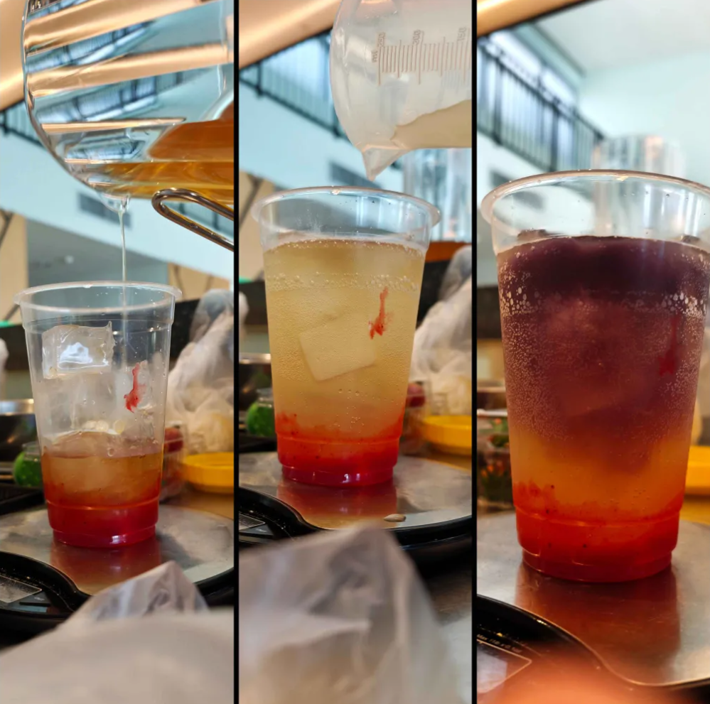
Draft 1 :
Thinking back on trendy beverage ideas, we wanted something light and airy, yet creamy to match with rich coconut flavours in our onigiris. The idea of having a blue pea cloud was born. Made with whipping cream, a bit of milk for control, and blue pea flower water with some blue dye to bring the colour to a pop, we created our beverage's signature look.
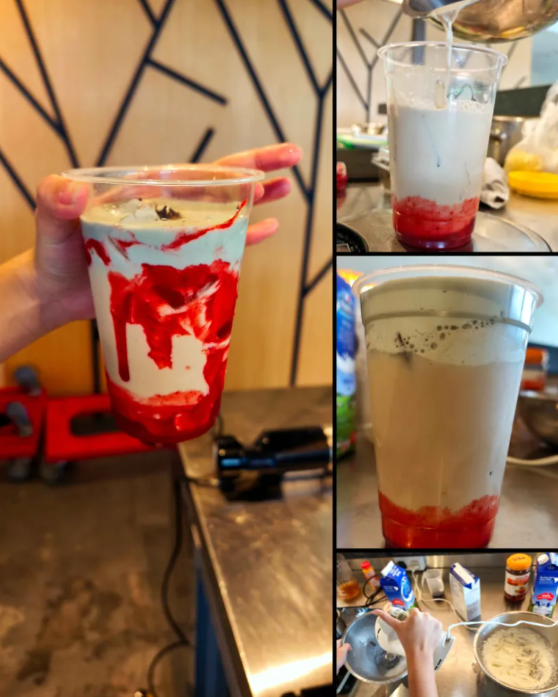
Draft 2:
We tried again using cold brew tea to replace the fizz, yet it was still missing something.In the end, we used bottled strawberry puree as the original fresh strawberry puree was far too lumpy, expensive, not time-efficient, and did not have that pop of colour. We also chose not to line the cup as the puree made the drink as a whole look unrefined.
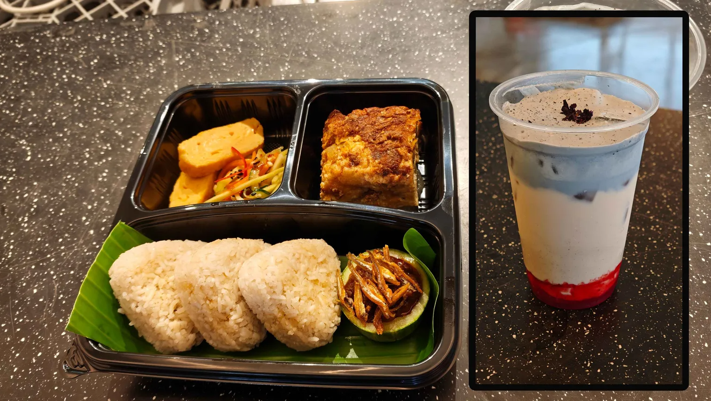
Final Recipe Standard: Selected a clean-finish fruit puree base for smooth consistency and vibrant color contrast, omitting glass lining for a cleaner presentation.
Term 2: Conceptualise A Limited-Time Offering Tart for our School's Library Café
Detailed breakdown of product R&D, recipe formulations, and visual development.
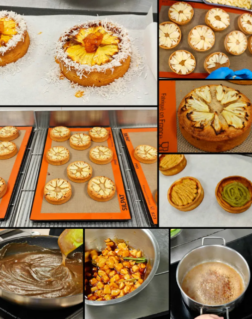
Concept Overview:Starting with our tart shell, it is then layered with our kaya pandan spread, and a brown butter frangipane layer for the deeper nutty flavour. Thinly sliced pineapple is placed on top like a bright sun before the entire shell is placed into the oven to bake. After the tart has cooled and glazed, caramelized pineapples and toasted coconut shavings were added.
R&D Phase: For each tart, we priced it at $5.80 (rounded up from $5.77). Per tart, ingredients costs us $2.52, and packaging costs $0.23, giving us a $3.02 profit (52%)
Exploring Café Craft: Coffee & Matcha
Matcha
Detailed breakdown of product, recipe formulations, and visual development.
 >
>
Concept Overview: My matcha journey began with curiosity — not just about the drink itself, but about the experience it creates. I was drawn to its calm, earthy flavour, its vibrant green colour, and the quiet ritual behind preparing it. Unlike drinks that feel rushed or overly sweet, matcha felt intentional to me.
It started with a few packet of matcha powder and a matcha whisk my mom gave me as a gift from her work trip to Japan, along with an IKEA wooden bowl
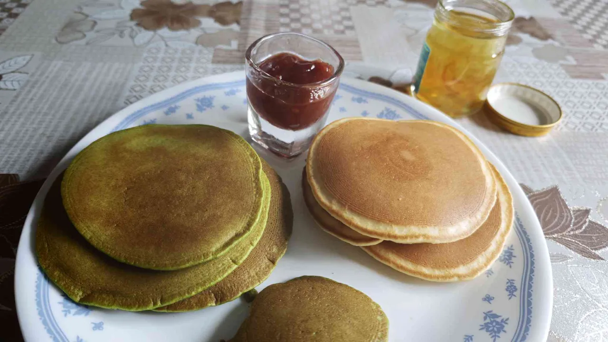
Before long, it blossomed into some form of craze in our household. Complete matcha sets and various grades of matcha powder, as well as other beverage components started becoming a thing. I also started playing with using Fresh Milk, Oat Milk, and Soy Milk, and Oat Milk was the best due to its mild nuttiness and richness. After learning about Cheongs and Shrubs in our 2nd semester in Year 2 about mixology, I wanted to try out more flavours other than strawberries


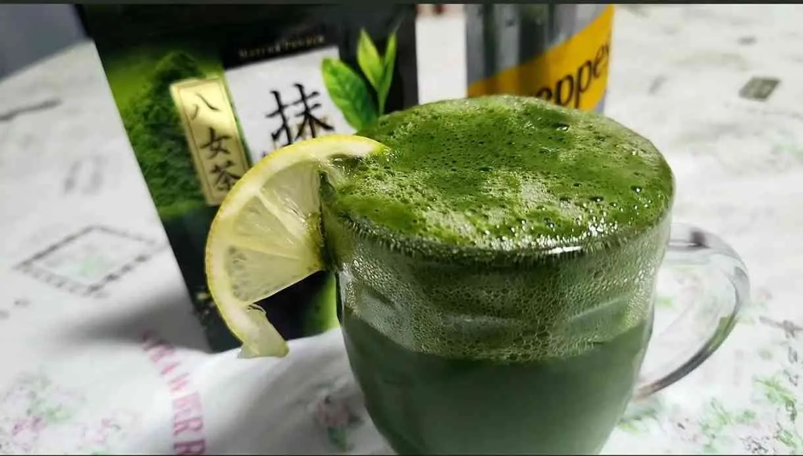
Coffee
After our 1st semester in Year 2, I gained quite a liking for the art of coffee. Unlike matcha, coffee felt more bold and expressive, with each cup offering a different experience depending on its roast, strength, milk balance, temperature, and preparation style. I became more aware of how small details could change the mood of a cup — from the richness of the espresso and its crema to the creaminess of milk, and the level of sweetness.
.png)
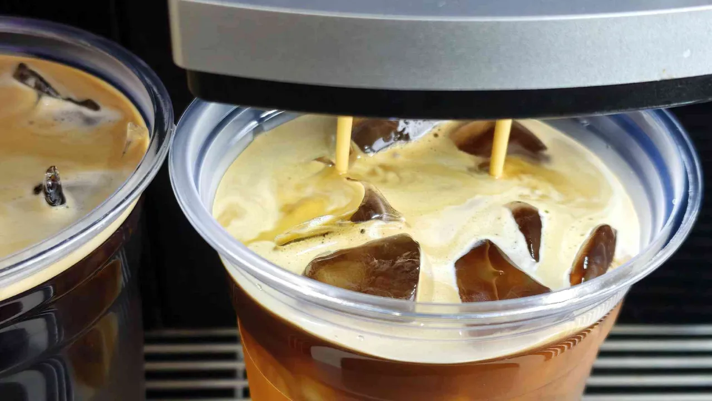


Traditional coffee making (without an electronic tamper) can change the way the espresso flows. Since I normally use a espresso machine to make my coffee at home, I would need to grind the beans till fine (table salt) to achieve its signature strong and sharp, yet aromatic flavour. Tamping was my biggest issue overall. Tamped too hard and the waterflow resulted in bitter, foul tasting espresso. Tamp without enough strength allowed the water to shoot straight through, making it fast, thin, and watery. Simply putting it. The espresso shot should be flowing like honey.
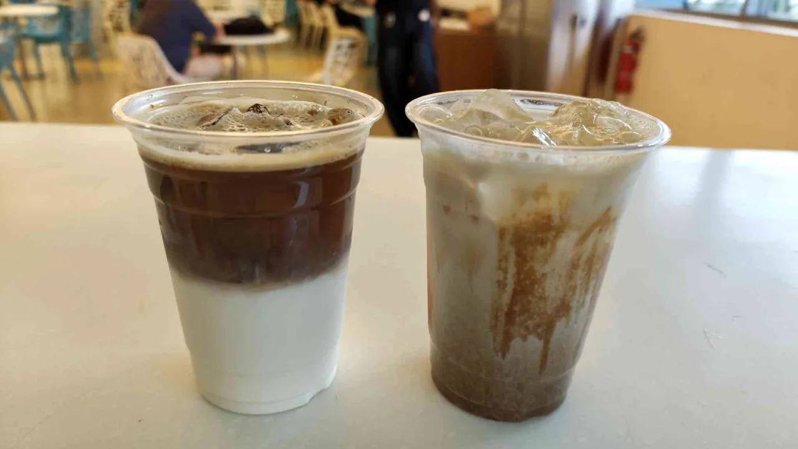
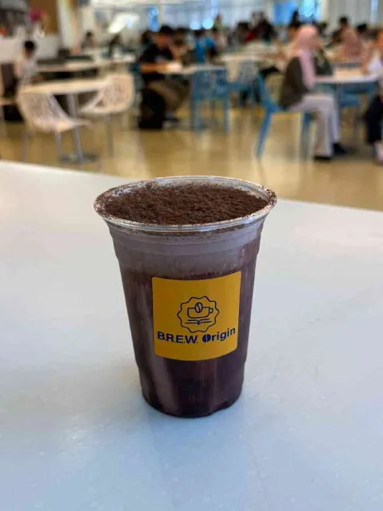
Gallery
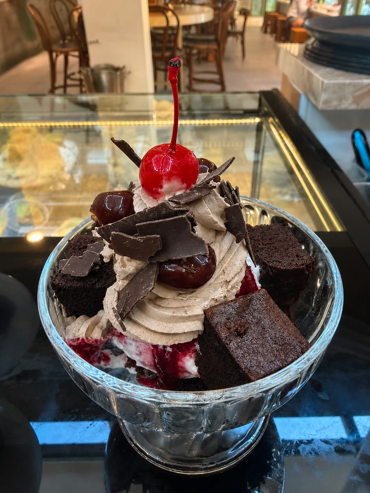

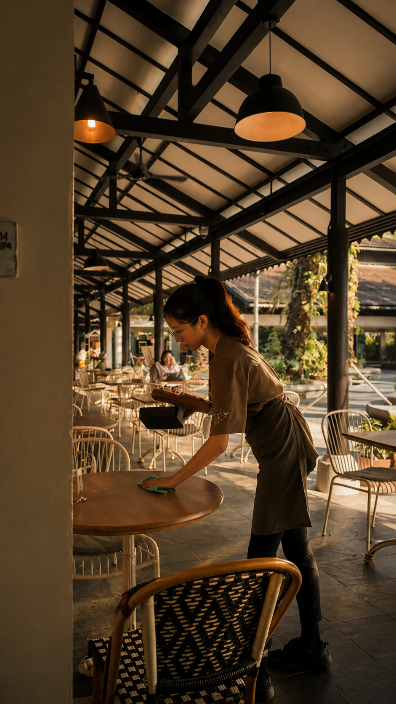
Contact
Get in touch with me if you have any questions or would like to connect. I am always open to discussions!
Direct Contact Details
Email: clarissesim1208@gmail.com
Mobile: +65 9816 8797